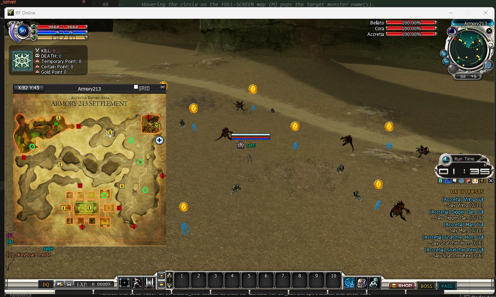

Quest System (Classic & Daily)
Quest System (Classic & Daily)
What it does — and why you would use it
The quest world is normally baked into shipped data tables (the server’s Quest.dat / Quest*Event.dat and the client’s Quest.edf) and the compiled binaries. This feature lifts all of it into two plain-language .lua files you edit in Notepad — no recompiling, no restart:
QuestScript.lua— the classic NPC quest system. The whole quest line: every quest record (level gate, objectives, rewards, links, fails), every trigger / “happen event” that starts or advances a quest, plus the runtime switches, per-player caps and client display toggles. It is organised into six independently-switched sections, so you can override just the quest definitions, or just the trigger behaviour, or just the caps.DailyQuest.lua— a self-contained Daily Quest board. Repeatable quests defined end-to-end (their own code, window text, objectives, reset model, availability window, completion cap and reward). These live in neitherQuest.edfnorQuest.dat: a dedicated server tracker owns accept / progress / turn-in / persistence, and players open a dedicated Daily Quests window with the/dailychat command (or the amber DAILY button on the bottom bar).
Every shipped value in both files is the current game value, so leaving a switch at Enable = false (or turning it on without editing anything) changes nothing — byte-for-byte stock. Flip a switch to true, edit a row, save, and the running Zone server notices it in about half a second and re-applies just that change.
system_msg channels (index 54 for the quest table, 55 / 56 for the daily board). The client-side display and the Daily Quests window only appear for a client rebuilt with Quest-System support; a stock client keeps its own Quest.edf display and simply ignores the push.The two files
Both live together in .Server\Zoneserver\RF_Bin\Modules\Quest\. They are watched and hot-reloaded as one module.
| File | Side | What it governs |
|---|---|---|
QuestScript.lua | Server Client | The classic NPC quest system in six sections: QuestTable (definitions), QuestEventTable (trigger / happen events), TriggerSettings, PlayerStateSettings, RuntimeLoopSettings, ClientSettings. Each section has its own Enable. |
DailyQuest.lua | Server Client | The self-contained daily-quest engine: one master Enable plus a Quests list, each authored end-to-end. Progress is driven automatically from in-game events (mob kill, item buy, quest finish, …) — no NPC dialog involved. |
How to activate it
- Open the folder. Go to .Server\Zoneserver\RF_Bin\Modules\Quest\ and open the file you want to tune in Notepad. Each opens with a plain-English guide at the top.
- Flip the switch you need. In
QuestScript.luaeach of the six sections has its ownEnable = falseline near the top of that section; inDailyQuest.luathere is one masterEnableplus a per-questEnable. Changefalsetotrue(lowercase). Saving applies it live — no restart. - Edit only the rows you care about. Every shipped row already re-states the current value, so
Enable = truewith no edits is idempotent (nothing moves). - Client effects need a rebuilt client. The re-pushed tables and the Daily Quests window only do something on a client rebuilt with Quest-System support; a stock client ignores them.
- Revert any time. Set a section (or the whole file) back to
Enable = falseand save — that area returns to stock instantly.
Enable = false, never remove the file. In QuestScript.lua the rows mirror the raw .dat records: do not delete a column from a row — an omitted column is read as its default and would overwrite a field that is otherwise preserved.Classic quests — the six sections of QuestScript.lua
One global QuestSystemScript table holding six sections. Turn on only the sections you intend to change; each is independent.
1. QuestTable — the quest definitions
One row per quest (mirrors Quest.dat). When on, the zone patches its in-memory quest records and ships every row to each client (index 54, chunked). Rows are keyed by Index (the record number) and verified against Code before any patch lands, so a wrong Index silently does nothing instead of overwriting a neighbour quest. The operationally important fields:
| Field | Meaning |
|---|---|
Index / Code | Key + guard. Index is the record number in Quest.dat; Code (e.g. "Q070000") must match the record at that index or the row is skipped. |
LimLv / MaxLevel | Level gate to accept / the level above which the quest stops counting. -1 = none. |
QuestType / QuestRepeat / RepeatTime | Quest category, whether it is repeatable, and the repeat interval. |
Actions (up to 3) | The quest objectives. Each { ActType, Sub, Sub2, Area, ReqAct, SetCntPro, LinkQuestItem, Order } — the act type, its target code, required count (ReqAct) and percent-progress (SetCntPro). |
Rewards (up to 6) | Items granted on completion, each { ConsITCode, ConsITCnt, LinkQuestIdx }. |
ConsExp / ConsGold / ConsDalant / ConsContribution / Conspvppoint | The non-item reward amounts (exp, gold, dalant, contribution, PvP point). |
Masteries / Skill / Force | Mastery / skill / force rewards. |
LinkQuests / LinkQuestGroupID | Quests this one chains into (up to 5) and its link group. |
Fails / FailCheck / FailBriefCode | Fail conditions and the fail-message text code. |
ViewportType / ViewportCode / Store_trade / ViewportExpText | Minimap / viewport marker and the quest-window text binding. |
2. QuestEventTable — the triggers (“Quest Happen Event”)
One Files entry per happen type (Dummy, LvUp, Promote, Grade, Mastery, GainItem, KillOtherRace, LvLimit, NPC, …), each holding one row per event (mirrors Quest*Event.dat). When on it patches the zone’s happen-event records. This is where a quest starts and where progress / completion / link triggers live: each row has Nodes, and each node carries an acceptance probability (AcePProNum / AcePProDen), a set of Conds ({ Type, SubType, Val }) and the LinkQuests it can fire.
3. TriggerSettings — runtime switches for the matcher
| Key | Default | Meaning |
|---|---|---|
EnableHappenEvent | true | Master switch for the happen-event matcher. false = no quest ever auto-fires. |
EnableLvUp / EnablePromote / EnableGrade / EnableMastery / EnableGainItem / EnableKillOtherRace / EnableLvLimit / EnableNPC / EnableDummy | true | Per-happen-type gates — allow or block that event type from firing quests. |
AcceptProbPercent | 100 | Global clamp on the per-node acceptance probability (AcePProNum / AcePProDen). |
4. PlayerStateSettings — what is saved / how it is capped
| Key | Default | Meaning |
|---|---|---|
MaxActiveQuestSlots | 30 | Active-quest cap (cannot exceed the compiled 30); a new quest beyond it is refused. |
MaxHistoryKeep | 70 | Completed-quest history retention cap (cannot exceed the compiled 70). |
SaveProgressOnTick | true | Write slot progress back to the DB every loop tick. |
AutoDeleteMissingSlot | true | Drop a slot whose quest record no longer exists in the table. |
AllowGiveup | true | Master allow for giving up a quest. |
RepeatCompletedQuests | true | Allow repeatable quests to restart after completion. |
5. RuntimeLoopSettings — the quest loop cadence
| Key | Default | Meaning |
|---|---|---|
TimeoutCheckIntervalMs | 10000 | How often each player runs the quest timeout / fail pass (native 10000 ms). |
PassSecStep | 10 | Seconds added to the elapsed-time counter per tick when the interval elapses (native 10). |
6. ClientSettings — client display toggles
| Key | Default | Meaning |
|---|---|---|
ShowQuestBoard | true | Client quest board window enabled. |
ShowTracker | true | On-screen active-quest tracker. |
ShowLevelLimit | true | Dim / grey quests the player cannot yet take by level. |
AutoOpenOnAccept | false | Open the quest window when a quest is accepted. |
Daily quests (DailyQuest.lua)
A standalone engine. Global defaults sit at the top of the DailyQuestScript table; each daily is one entry in Quests.
| Global key | Default | Meaning |
|---|---|---|
Enable | true | Master switch. false = feature off entirely (no tracker, no pushes, empty board). |
TimeZoneOffsetHours | 8 | The Zone server’s global clock base (PH = GMT+8). All date / time maths use it. |
DefaultIntervalSec / DefaultResetHour / DefaultResetMinute / DefaultMaxPerPeriod | 86400 / 0 / 0 / 1 | Fallbacks a quest inherits when it does not set its own reset fields. |
Per-quest fields (only Code and Q are required): Level (min to accept), the window text Title / Brief / Instruction / Details / CompleteText / FailText (pushed to the client verbatim), the objectives Q, the reset model, an optional availability window, and the Reward.
Objectives (Q)
All listed objectives must be met (AND), up to 3. Two accepted shapes — a flat single objective, or a list of them, each with an optional Text line:
-- flat, single objective:
Q = { "KillMon", "00002", 15 }
-- list of objectives, each with its own display text:
Q = {
{ "KillMon", "00002", 10, Text = "Slay %target (%cur/%need)" },
{ "CollectItem", "1001", 3 },
}The first item is a shortcut name from the objective-type table below (or a quoted raw act-code number). target is a number or quoted string (-1 / omitted = match-any); required is a positive integer. The Text tokens %target %cur %need %race %item %level are substituted by the client at render time; omit Text to use the shortcut’s default template.
Reset model, window and reward
| Field | Meaning |
|---|---|
Reset | "Rolling" (re-opens IntervalSec after each completion) | "Daily" (re-opens at ResetHour:ResetMinute each day) | "Weekly" (re-opens at ResetDayOfWeek, 0=Sun..6=Sat, at that time). |
MaxPerPeriod | Completions allowed inside one period before it locks until the next boundary (1 = classic once-a-day). |
StartDate/StartTime / EndDate/EndTime | Optional availability window (PH time, dates YYYY-MM-DD, times HH:MM). Outside it the board still lists the quest but Accept is refused. Absent = always offerable. |
Reward | Server-authoritative, granted on turn-in: { Exp, Gold, PvPPoint, Contribution, Dalant, Items = { { Code="..", Count=n }, ... } } — up to 6 items. Code must be the item’s real in-game item-code string (the same 7-char code used in PotionLua / ItemStack / Battlepass, e.g. "ipbhp01", "irtal01", "ipgld30"), not a numeric DT index — the reward resolves through GetItemTableCode() off the code’s letter prefix, so a bare number like "1001" matches no table and is silently not given. |
Persistence is automatic: each character’s accepted state, progress, per-period count and cooldown live in their own DF_tbl_DailyQuest table (created on demand), so the board survives relog / restart with no manual schema change.
Finding the target on the map (circle + hover)
A daily can also carry a map location. When it does, the client draws a green circle over the spot where the target monster lives — on both the on-screen radar and the full-screen map (press M) — and floats a quest mark above every matching live monster out in the world (see Quest Monster Marks). This is always-on: the circle and the mark show even before the player accepts, so they can scout the hunting ground first.

M) each daily’s hunting spot is ringed in green. Hovering a circle pops the exact monster name(s) to kill there; the same targets carry a mark overhead out in the world, and the accepted dailies list on the right.Location is authored with these optional per-quest fields:
| Field | Meaning |
|---|---|
MapName | The in-game map display name (e.g. "Accretia HQ"). The client matches the circle to the map by this name (case-insensitive), not by id. |
LocX / LocZ | The world centre of the circle. LocZ is the ground / radar vertical axis — there is no LocY. |
LocR | The circle radius in world units. |
MapId | Informational only — the client keys on MapName. |
MapName, LocX and LocZ blank (empty / 0) and the server resolves the spot live from the spawn tables, centring the circle on that monster’s spawn points on the daily’s own race home map (Neutral A/B/C). Hand-authored / baked coordinates always win, because auto-placement only runs when all three fields are blank. If the monster does not spawn on the home map the location stays blank and no circle is drawn.The name shown on hover, and the monster the overhead mark locks onto, are resolved from the objective’s monster code, which the client reads as a hex MeshID — so always use the exact code string from the monster data (see the objective-type table).
Daily objective types (the shortcut table)
A daily objective names one of these shortcut strings; the zone maps it to the game event that already feeds quest progress. Codes 39 and 51 have no attributable event site in this build and are not accepted.
| Shortcut | Act | Target arg | Default text |
|---|---|---|---|
KillMon | 3 | monster code | Kill %target x%cur/%need |
KillRace | 2 | other-race player code | Kill %target x%cur/%need |
GetQuestItem | 4 | item code | Collect %target x%cur/%need |
MineOre | 12 | ore code | Mine %target x%cur/%need |
GatherRes | 13 | resource code | Gather %target x%cur/%need |
PlaceStruct | 16 | trap / structure code | Place %target x%cur/%need |
FASQ | 30 | quest code (string) | Complete quest %target |
PIFANPC | 31 | item code (-1 = any) | Buy %target x%cur/%need |
GIFC | 32 | item code (-1 = any) | Combine %target x%cur/%need |
ReachLevel | 33 | target level (threshold) | Reach level %need |
Contribute | 34 | -1 (points accumulate) | Contribute %cur/%need points |
PvPPoints | 35 | -1 | Earn %cur/%need PvP points |
KillMobs | 36 | -1 (any non-boss mob) | Kill %cur/%need monsters |
KillBosses | 37 | -1 (any pit boss) | Kill %cur/%need bosses |
KillTerminal | 38 | -1 (enemy terminal chip) | Destroy %cur/%need terminals |
UseNuke | 40 | -1 (any nuclear launch) | Launch %cur/%need nukes |
NukeKill | 41 | -1 (kills by nuke) | Kill %cur/%need with nukes |
KillEnemyRace | 42 | race code (-1 = any) | Kill %target x%cur/%need |
KillRaceBoss | 43 | -1 (enemy race boss) | Kill %cur/%need race bosses |
GoldPoints | 44 | -1 (gold accumulate) | Earn %cur/%need gold |
ProcessPoints | 45 | -1 (mining / process) | Process %cur/%need points |
HuntPoints | 46 | -1 (hunt / kill points) | Hunt %cur/%need points |
TempPvP | 47 | -1 (temp PvP points) | Earn %cur/%need temp PvP |
CollectItem | 48 | item code (-1 = any ground / loot) | Collect %target x%cur/%need |
VisitMap | 49 | map code (-1 = any) on entry | Visit %target x%cur/%need |
WinOccupy | 50 | -1 (holy-stone occupation win) | Win %cur/%need occupations |
For KillMon, %target resolves to the monster’s readable name (the client looks up the mob whose MeshID equals the code), so keep the numeric mob code in the args and write Text = "Slay %target (%cur/%need)" — the player sees “Slay Young Flym (0/10)”. For every other act there is no single-field name lookup, so %target falls back to the raw code.
Rules & limits
- Off = stock. Every shipped default reproduces the current game; with all six
QuestScript.luasections and theDailyQuest.luamaster switch atEnable = false, the deployed state is behaviourally identical to an untouched server. - Never delete a column. In
QuestScript.luaan omitted column is read as its default and overwrites a field that would otherwise be preserved — edit values, keep every column. - Match by
Index, guard withCode. Classic rows are keyed by their recordIndexand cross-checked againstCode; a wrong index results in 0 rows patched (safe) instead of overwriting the wrong quest. - Daily codes are reserved. Every
DailyQuest.luaCodeMUST start with"DQ"(e.g."DQ0001"); an entry without the prefix is skipped with a PROBLEM log, so dailies can never collide with a native quest code. - Fixed caps. Classic: up to 3 objectives, up to 6 reward items, up to 5 link quests;
MaxActiveQuestSlotscannot exceed 30 andMaxHistoryKeepcannot exceed 70. Daily: up to 3 objectives (AND), up to 6 reward items; act codes 39 and 51 are not accepted. - PH clock for all dailies. Date / time maths use the Zone server’s global clock at
TimeZoneOffsetHours(default GMT+8); set the reset hours and availability windows in that wall-clock. - Current binaries required. The live record patch and the client push only work on the current Zone server exe plus a matching rebuilt
RF_Online.bin. On an older binary the config is read but those effects will not appear. - See also the Quest Monster Marks client feature for the yellow markers over quest-target monsters.